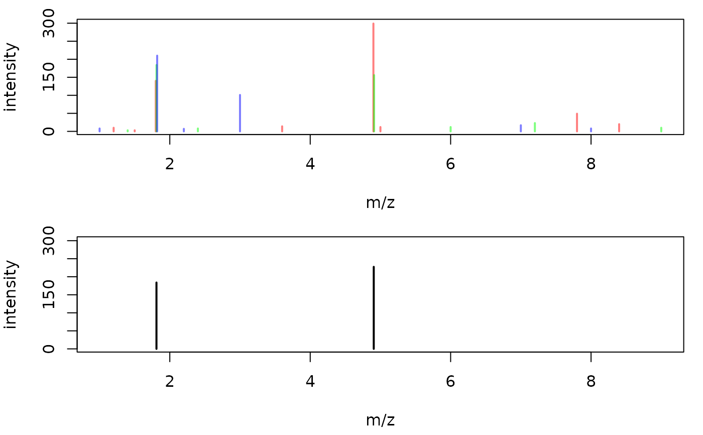

consensusSpectrum takes a list of spectra and combines them to a
consensus spectrum containing mass peaks that are present in a user
definable proportion of spectra.
consensusSpectrum(x, mzd, minProp = 0.5, intensityFun = base::max, ppm = 0, ...)
| x | |
|---|---|
| mzd |
|
| minProp |
|
| intensityFun |
|
| ppm |
|
| ... | additional arguments to be passed to |
Peaks from spectra with a difference of their m/z being smaller than mzd
are grouped into the same final mass peak with their intensities being
aggregated with intensityFun. The m/z of the final mass peaks is calculated
using a intensity-weighted mean of the m/z values from the individual mass
peaks. Alternatively (or in addition) it is possible to perform an m/z dependent
grouping of mass peaks with parameter ppm: mass peaks from different spectra
with a difference in their m/z smaller than ppm of their m/z are grouped
into the same final peak.
Other spectra combination functions: meanMzInts
library(MSnbase) ## Create 3 example spectra. sp1 <- new("Spectrum2", rt = 1, precursorMz = 1.41, mz = c(1.2, 1.5, 1.8, 3.6, 4.9, 5.0, 7.8, 8.4), intensity = c(10, 3, 140, 14, 299, 12, 49, 20)) sp2 <- new("Spectrum2", rt = 1.1, precursorMz = 1.4102, mz = c(1.4, 1.81, 2.4, 4.91, 6.0, 7.2, 9), intensity = c(3, 184, 8, 156, 12, 23, 10)) sp3 <- new("Spectrum2", rt = 1.2, precursorMz = 1.409, mz = c(1, 1.82, 2.2, 3, 7.0, 8), intensity = c(8, 210, 7, 101, 17, 8)) spl <- Spectra(sp1, sp2, sp3) ## Plot the spectra, each in a different color par(mfrow = c(2, 1), mar = c(4.3, 4, 1, 1)) plot(mz(sp1), intensity(sp1), type = "h", col = "#ff000080", lwd = 2, xlab = "m/z", ylab = "intensity", xlim = range(mz(spl)), ylim = range(intensity(spl))) points(mz(sp2), intensity(sp2), type = "h", col = "#00ff0080", lwd = 2) points(mz(sp3), intensity(sp3), type = "h", col = "#0000ff80", lwd = 2) cons <- consensusSpectrum(spl, mzd = 0.02, minProp = 2/3) ## Peaks of the consensus spectrum mz(cons)#> [1] 1.811304 4.903435intensity(cons)#> [1] 210 299#> [1] 1precursorMz(cons)#> [1] 1.41plot(mz(cons), intensity(cons), type = "h", xlab = "m/z", ylab = "intensity", xlim = range(mz(spl)), ylim = range(intensity(spl)), lwd = 2)